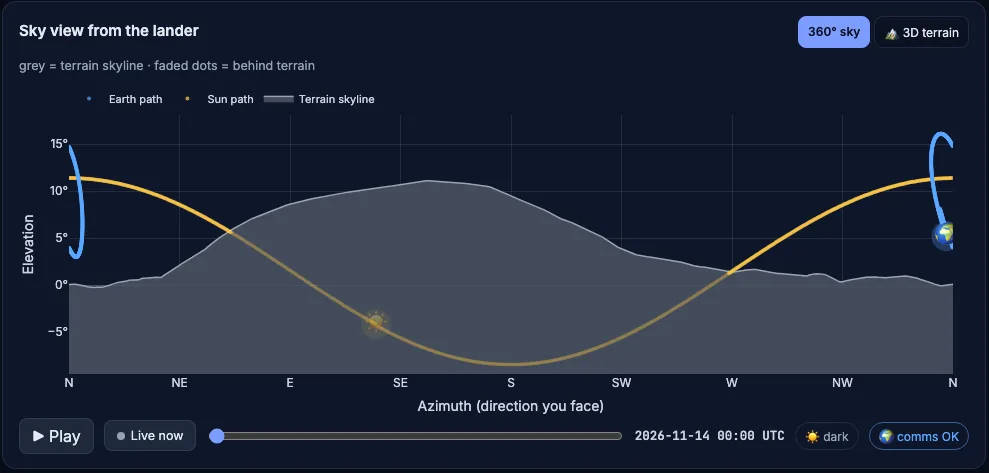
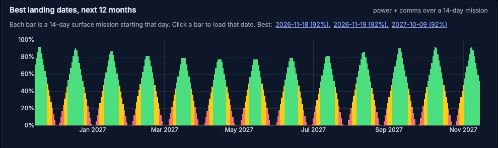

NASA Space Apps 2026 · Lunar Landing Site Navigator
Horizon404
Will your lander see the Sun and the Earth?
And for how long?
And for how long?
Pick any spot near the Moon's south pole and a date. You get hour-by-hour sunlight, Earth contact, nights and slope in a few clicks. Computed from NASA terrain and JPL ephemerides.
Team Orbit404 · Hamburg

What we built
Pick a spot and a date. Horizon404 answers the mission questions.
1
Power + comms %: share of time with sunlight and Earth in view together.
2
Next sunset and Earthset, the longest night, and whether your battery lasts it.
3
360° sky view: Sun and Earth paths against the real terrain skyline.
4
Best landing dates over 12 months, and landing slope safety.
5
Tweak the mission: mast height, battery, window. Compare sites side by side.


Horizon404 · Orbit4043 / 7
See it, don't just read it
Maps, a light-and-shadow movie, a year at a glance and 3D terrain.
 Suitability maps: power + comms, sun, Earth, slope
Suitability maps: power + comms, sun, Earth, slope Animated light & shadow over a lunar day
Animated light & shadow over a lunar day Every hour of a year in one barcode
Every hour of a year in one barcode
Best landing dates for 12 months Operational windows, CSV export, share links
Operational windows, CSV export, share linksHorizon404 · Orbit4046 / 7